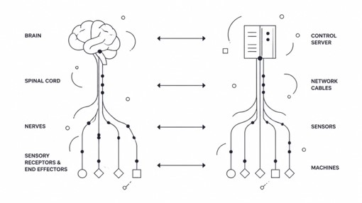
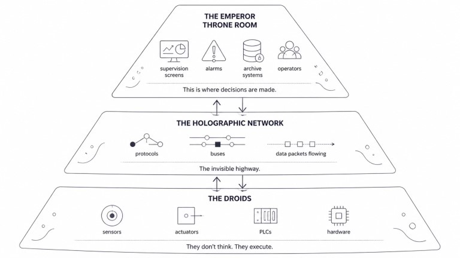
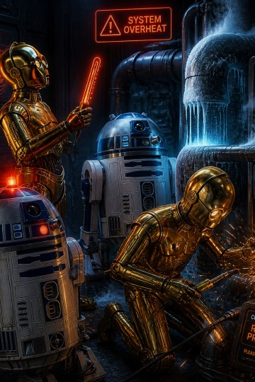
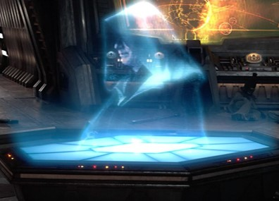
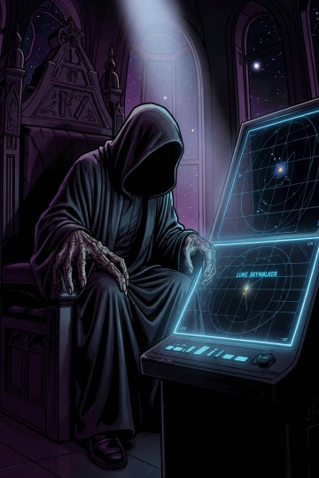
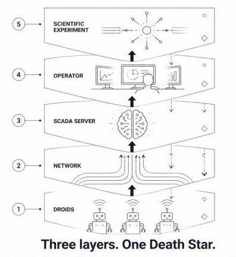

Understand SCADA, You Must.
A beginner's guide to industrial control systems — told the only way that makes sense.
"You've seen control rooms in movies. This is how they actually work."
⬇ Download the companion guide (PDF) ▶ See episode on YoutubeWhat is a SCADA?
Imagine operating the Death Star. Thousands of doors. Millions of sensors. Thousands of motors. Cooling systems. Vacuum systems. Power supplies. Particle accelerators. Cryogenic pumps. Radiation monitors.
Would you control all of this manually? Obviously not. Neither does any modern facility — CERN, NASA, power grids, water treatment plants. All automated.
SCADA stands for Supervisory Control And Data Acquisition. But forget the acronym. A SCADA is the nervous system of your installation. Invisible. Everywhere. Connecting everything. When it works — nobody notices. When it fails — everyone notices. Sound familiar? That's the Force.

The Three Layers of the Death Star
This is the key concept. Tattoo it on your brain. Everything else builds on this.

Layer 1 — The Droids
Droids do exactly two things. That's it. Just two: they observe, or they act.
In the real world, this is your sensors, your motors, your valves, your industrial controllers. One sensor checks if a pipe is too hot. Another one measures pressure. Another controls a pump. Just like a Droid reporting back to base — "All clear in corridor seven."

They're not smart. They don't think. But without them — you're flying completely blind through the asteroid field. In EPICS, each measurement is called a Process Variable (PV). In TANGO, it's called an Attribute. Same Droids — different name tags.
Layer 2 — The Holographic Network
Remember that flickering blue hologram? The Emperor calling Darth Vader from across the galaxy? That's your communication bus. The invisible highway that carries information between the ground level — your sensors and machines — and the brain of the system.
Data goes up ↑. Orders go down ↓. All day. Every second. Never stopping.

If it fails? It's like destroying Alderaan. Everything stops. Instantly. No data. No control. No nothing. In EPICS, the protocol is called Channel Access (or its modern version PV Access). In TANGO, it started with CORBA and evolved toward ZeroMQ.
Respect the bus. It's more important than it looks.
Layer 3 — The Emperor's Throne Room
The Emperor sees everything. Knows everything. Decides everything. That's your SCADA server. Darth Vader executes. Immediately. No discussion. That's your real-time supervisor.
In EPICS, this layer is handled by the IOC (Input Output Controller). In TANGO, by the Device Server — which adds the concept of Commands.

This layer manages alarms ("Luke is too close to Reactor 4"), dashboards (all blinking screens, all the time), archives (like the Jedi Archives — everything recorded), and automation (Order 66 — one command, many consequences).
Now Put It All Together
Three layers. One system. One very large machine that hopefully doesn't have an exposed thermal exhaust port.

Your Droids collect data on the ground → that data travels through the holographic network → it all ends up at the Emperor's throne room where decisions are made and sent back down.
"Three layers. One Death Star. Hopefully yours won't be destroyed by a single well-aimed shot."
What You Now Know, Padawan 🎓

⚡ A SCADA is not just software. It's hardware, network, logic, and humans — all working together.
🔗 It connects people and machines. The whole point is bridging the gap between a physical process and the human who needs to understand it at a glance.
📡 The network is more critical than it looks. Flashy dashboards get the glory. The communication bus does the actual work. Respect the bus.
🧠 The brain layer is where magic happens. Alarms. Archives. Automation. This is the layer that turns raw data into decisions.
👥 No SCADA survives without its community. The Alliance always beats the Empire.
Same Death Star. Different Blueprints.
In Episode 2, we discover two legendary implementations of this architecture — two frameworks that power real facilities across the galaxy.
🔵 EPICS — Experimental Physics and Industrial Control System. The workhorse of particle accelerators worldwide. Used at CERN, Fermilab, and more. Battle-tested. Legendary.
🟠 TANGO Controls — Open-source. Object-oriented. Built for complex scientific instruments. Beloved by European research labs. Elegant architecture. Very French. Very powerful.
Same three layers. Two very different galaxies. Choose your path, Padawan.
May the uptime be with you. 🚀
Glossary
Every technical term used in this guide — with plain-English definitions and links back to where they appear.
Go Further
Official documentation for the two frameworks explored in this series.